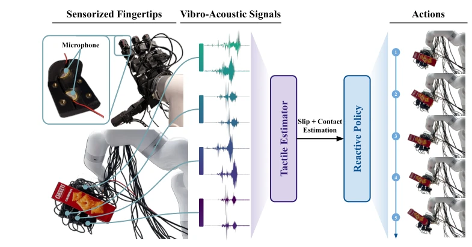
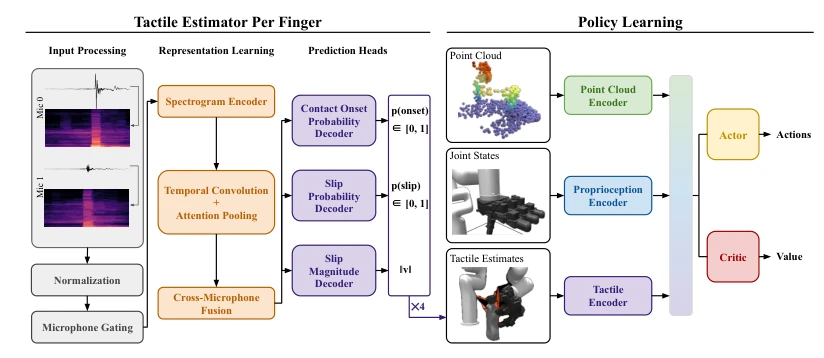
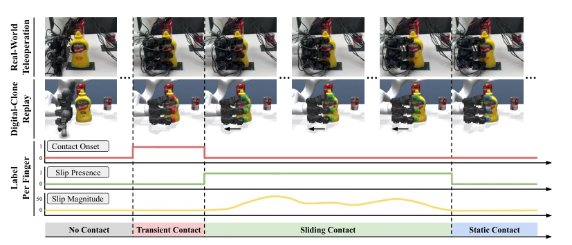
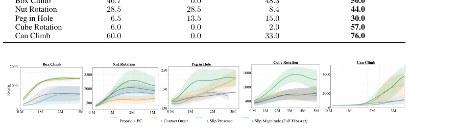
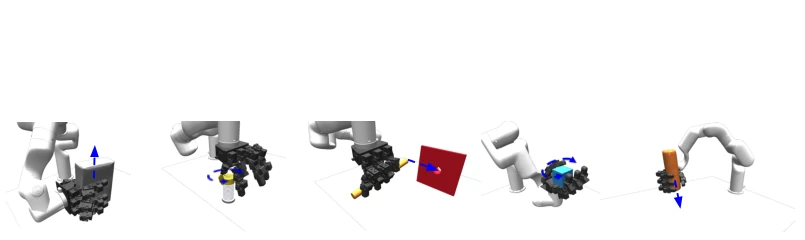

This paper introduces a "physical representation" middleware that decouples challenging audio signals from simulation control, with a clear conceptual framework. The authors observed that directly simulating microphone waveforms is highly problematic, while learning directly from real-world data is prohibitively expensive; thus, they employ low-dimensional physical quantities such as "contact + sliding" as a bridge. This approach is indeed efficient, decoupling perception from control, and addresses the Sim-to-Real gap effectively. However, compressing complex vibration information into a few scalars, while facilitating RL training, equates to discarding fine-grained details; if a task relies on texture recognition, this model is likely to struggle. Furthermore, this method is quite "sensitive" to hardware; a change in microphone position may necessitate retraining, raising the question of whether it is truly "fragile." In summary, for contact-rich tasks, this "sound-based localization" capability is significantly superior to relying solely on point clouds, particularly for slip detection. It offers a new pathway for tactile perception in Sim-to-Real, albeit at the cost of sacrificing some information richness.
Dexterous manipulation relies on rapid, local contact events, which are often occluded by vision [1]. Existing visual tactile sensors (e.g., GelSight [3], Digit [4]) offer high resolution but suffer from large mechanical volume, limited bandwidth, and high computational overhead. Piezoelectric microphones, while inexpensive, high-bandwidth, and embeddable in fingertips, produce vibration waveforms heavily influenced by material, installation position, and background noise, making precise reproduction in simulation difficult [9]. Directly performing reinforcement learning based on real-world vibrotactile data is prohibitively costly and unsafe [37-41]. Therefore, a representation connecting real-world sensing with simulation control is required, one that retains key interaction information yet remains computable within simulation. VIBEACT aims to address the difficulty of end-to-end policy learning caused by the challenge of simulating vibro-acoustic signals, bridging the gap between high-bandwidth tactile sensing and simulation policies.
The overall workflow is divided into three steps: data annotation, perception estimation, and policy learning. First, real robot trajectories and microphone audio are collected via teleoperation; trajectories are replayed in a calibrated MuJoCo digital twin, where the simulator's contact solver automatically generates contact and sliding labels for each finger without manual annotation [4]. Second, a Tactile Estimator is trained, utilizing four independent sub-networks to map real microphone waveforms to physical representations (contact onset, sliding existence, sliding magnitude), addressing the perception domain gap. The network employs log-mel spectrogram input, with independent encoders processing each finger, which are then fused to predict three heads. The loss function comprises classification and regression losses, weighted for sparse events. Finally, a PPO policy is trained in simulation with inputs comprising proprioception, point clouds, and this tactile representation; during deployment, the estimator replaces the simulator's output tactile channel [3]. The innovations lie in defining a low-dimensional physical representation as an intermediate interface, decoupling perception and control, and utilizing the digital twin to achieve unsupervised label generation. This allows policies to leverage tactile feedback without simulating raw audio, and the representation design retains key feedback such as contact status, sliding status, and sliding severity, avoiding the complexity of direct audio simulation.

Figure 1: VIBEACT connects real vibrotactile sensing to simulation-based policy learning through an explicit intermediate representation of contact and slip. A tactile estimator infers this representation from microphone signals, and the policy learns to act on the same representation in simulation.

Figure 3: An overview of VIBEACT. We train a tactile estimator with four independent per-finger subnetworks using real-world data to map vibro-acoustic signals to a physically grounded contact and slip representation. We then train RL policies that use this representation as an additional observation modality alongside point clouds and proprioception.

Figure 4: Vibrotactile data labeling setup. We replay real-world teleoperation recordings in a calibrated digital clone, where the simulator’s contact solver produces per-finger contact and slip labels for training the tactile estimator without manual annotation.
实验Experiments
在五个接触丰富任务上评估（Box Climb, Nut Rotation, Peg in Hole, Cube Rotation, Can Climb），对比 Proprio+Point Cloud 基线。使用固定物体和移动物体数据集训练估计器。结果显示，完整 VIBEACT 在所有任务上成功率最高，尤其在需要持续反应控制的任务（如 Cube Rotation, Peg in Hole）中提升显著（+51/+24 点）。消融实验表明，滑动幅度（Slip Magnitude）通道贡献最大，接触 onset 单独使用效果不稳定。硬件部署验证了 Sim-to-Real 迁移的有效性，VIBEACT 在真实平台上优于基线，证明了该表示在真实传感噪声下仍具鲁棒性。
Evaluation was conducted on five contact-rich tasks (Box Climb, Nut Rotation, Peg in Hole, Cube Rotation, Can Climb), comparing against a Proprio+Point Cloud baseline. The estimator was trained using fixed object and moving object datasets. Results indicate that the complete VIBEACT achieves the highest success rate across all tasks, with significant improvements in tasks requiring continuous reactive control (e.g., Cube Rotation, Peg in Hole) (+51/+24 points). Ablation studies demonstrate that the Slip Magnitude channel contributes the most, while contact onset alone yields unstable results. Hardware deployment validates the effectiveness of Sim-to-Real transfer; VIBEACT outperforms the baseline on the real platform, demonstrating that the representation remains robust under real-world sensing noise.

Figure 5: Training curves for the VIBEACT policies and baselines.

Figure 6: Tasks. We evaluate VIBEACT on five contact-rich manipulation tasks: Box Climb and Can Climb require the hand to walk its fingers along a held YCB object; Peg in Hole requires sideways insertion after a scripted pregrasp; Cube Rotation requires repeated finger gaiting to rotate the cube, while Nut Rotation requires hand-arm coordination to succeed. The blue arrow indicates the task objective.